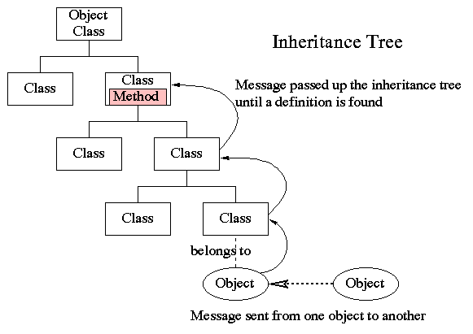

最终超类——Object类
哈哈，祝贺大家！在前几个章节中我们已经攻克了AP所涉及的Java面向对象编程中，最难啃的几个概念。这一章节与下一章节，我们将进行收尾。请大家不要急躁，马上，我们就完成所有章节的攻克啦！
Object类是什么
我们在继承章节中讲过，在Java中，除了最终超类：Object类，所有的类都有且仅有一个直接的父类（这被称为单继承）。当没有明确在程序中声明某些类所属的父类时，这些类都是最终超类：Object类的（隐式）子类。
那么，Object类，就是Java世界中，处在类继承层次结构上的最高层次的那一个类，也叫作最终超类(ultimate superclass)。Object类是一个普通的类，而非抽象类。
在Java中，所有的类都被规定为继承自Object类，也就是说，Object类是所有类的直接或间接父类。

Object类里的方法
在Object类中有许多内置的方法。这些方法都被所有其他的类自动继承。Object类是一个普通的类，而非抽象类。因此，Object类中所有的方法都是带有具体实现的实例方法。在写程序时，你完全可以选择不去使用Object类中的任何内置方法。但是，如果你选择去使用它们，你可能会需要在子类中带有特定目的性地重写这些方法，使得这些方法更贴合你的子类。
在AP考试中，我们需要掌握两个Object类中的内置方法：toString()方法，以及equals()方法。
toString() 方法
toString()方法的具体实现语句如下：
public String toString()
这是一个public的，返回值为String型的方法。
这个方法的作用是，以String类型，返回调用这个方法"想要返回的"信息，这个信息作为toString()方法的返回值，也作为调用这个方法的对象的一个String类型的属性，最后，我们通常使用System.out.println(对象名)来打印出toString()方法返回的信息。也就是说，当你编写一段程序时，在一段方法的行为执行过程中，你可能会希望这个方法以字符串的形式返回一个信息（比如一句话）。例如，在一个改变银行账户余额的行为中，你可能会想让这个方法返回一个当前账户余额的信息。这个时候，你就可以使用toString()方法。也就是说，想让toString()方法返回什么样的信息，完全取决于编程者的意愿，完全取决于是什么样的一个具体对象调用了这个方法，取决于这一个调用它的对象想要返回什么信息。而，每一段程序，每一个对象想要做的事情都迥然不同，而toString()方法却是所有类都继承的、处在最终超类Object中的一个方法。显然，如果直接继承使用（而不加重写）这一个方法，根本不能满足每一个特定的类中的特定的对象的特定要求。因此，我们应该总是考虑在每一个需要使用toString()的方法中重写toString()方法。
如果我们直接使用Object类中的toString()而未进行重写，我们将得到toString()方法所在的类名加上一串数字（调用toString()类的对象的内存地址）。例如：
ExampleClass o = new ExampleClass;
System.out.println(o);
调用了继承自Object类的toString()方法，其结果可能为
ExampleClass@bbf326d7
这通常不是我们想要的结果（除非你的目的是知道对象的内存地址）。因此我们应该总是考虑在具体的类中重写toString()方法。
例如，我们想让一个方法能够返回一句话，来表述库存的书的数目：
public class Book{
int BookVolume = 500;
public String toString(){
return "The number of book is " + BookVolume + ".";
}
public static void main(String[] args){
Book b = new Book();
System.out.println(b);
}
}
会如我们所愿地输出结果:
The number of book is 500.
注意：
toString()方法是不适用于数组对象(array object)的。 若要打印出数组的元素，我们必须遍历数组的每一个元素，并明确地一个一个打印出这些元素的信息。
equals() 方法
相等的意义要视对象的类型而定。
举例来说，如果两个不同的作为原始数据类型的String类型的变量带有相同的字符，它们在涵义上是相等的，因为String作为原始类型，也只与涵义有关，不存在引用的概念，因此，这两个String类型的变量就可以说是完全相等了。
很多时候，我们想要知道两个原始数据类型(primitive type)是否相等。这个时候很简单，只要使用==这个运算符就可以。例如：
int a = 3;
byte b = 3;
System.out.println(if(a==b));
返回true
有时你想要知道两个引用类型的变量（比如类）在是否引用到（指向）同一个对象。这也很容易，也是使用==运算符。例如：
Date d1 = new Date("March", 2, 2018);
Date d2 = d1;
Date d3 = new Date("March", 2, 2018);
System.out.println(if(d1==d3));
将会返回false，因为d1与d3并非指向同一个对象：一个叫d1，一个叫d2，这是内存上占用两个不同内存地址的两个独立对象。
也就是说，对于原始数据类型的变量，==仅仅比较两个变量是否具有相同的字节。对于引用数据类型的变量，==仅仅比较两个变量是否指向同一个对象。
但是，有时，你会需要知道两个对象在实际意义上（也就是对象所包含的值）是否真的相等。此时你就得使用equals()这个方法。例如：
Date d1 = new Date("March", 2, 2018);
Date d2 = d1;
Date d3 = new Date("March", 2, 2018);
System.out.println(d1.equals(d3));
将返回true，因为，尽管d1与d2在引用上不相同（二者指向不同的对象，一个是d1，一个是d2），但二者的内容是一样的，都是同一个日期。
小练习
Consider the code fragment
Object intObj = new Integer(9);
System.out.println((String) intObj);
What will be output as a result of running the fragment?
(A) No output. A ClassCastExceptionwill be thrown.
(B) No output. An ArithmeticExceptionwill be thrown.
(C) 9
(D) "9"
(E) nine
实验室
在这里练习吧：
<lab lang="java" parameters="filename=Hello.java">
public class Hello {
public static void main(String[] args) {
// 在这里添加你的代码
}
}
</lab>